零编程基础逆向破解此crack过程记录
前情提要： 使用到的工具有：IDA、X64dbg 这个crackme的地址 https://www.52pojie.cn/thread-1921178-1-1.html
思路
通过问询AI可以知道，破解有两条路：1、强行修改跳转，2、找到密码。先来看看如何强行修改跳转吧。
方法一：强行修改跳转
一、下载工具
1.下载IDA
这个我直接去52pojie上找然后下载的
2.下载x64dbg
去谷歌搜索x64dbg，进入官网https://x64dbg.com/， 然后点击下载就完事儿了！
对了，还有一个重要的工具就是AI，我都是问AI告诉我怎么做的。 准备完毕，开始着手吧！
二、用IDA进行静态分析
PS 注意，这里说一下IDA是干啥的：IDA 是一个：静态分析工具，它不运行程序，只分析代码结构。我们可以用它来看函数逻辑、找关键字符串、看流程图（程序结构）从而来进行逆向分析。
打开IDA——>点击ok——>点击new，开始新项目，找到要分析的文件crackme.exe并打开（也可以直接拖进去），会弹出load a new file的弹窗，直接点ok，等待其自动分析完毕，页面下方output框会显示：The initial autoanalysis has been finished.就是初步分析完毕。
直接进入眼帘的就是一个流程图一样的页面即反汇编视图，
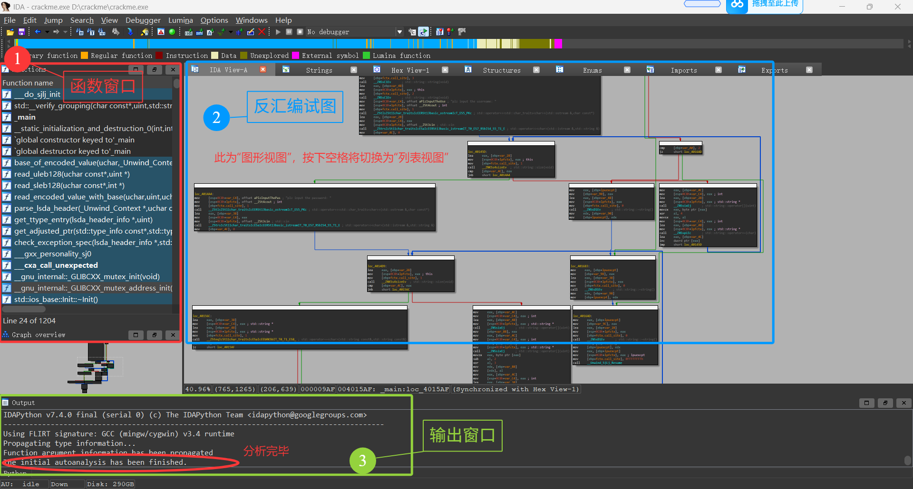
按住shift+f12,打开字符串窗口,找到类似"Correct"、"Wrong"、"Success"、"Fail"、"Password"的字眼，双击
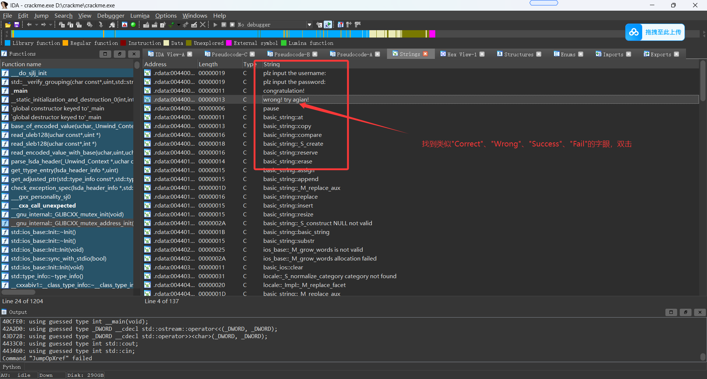
双击之后进入，可以看到这一行：rdata:00440043 aWrongTryAgian db 'wrong! try agian! ',0
按x键，看看是哪里引用
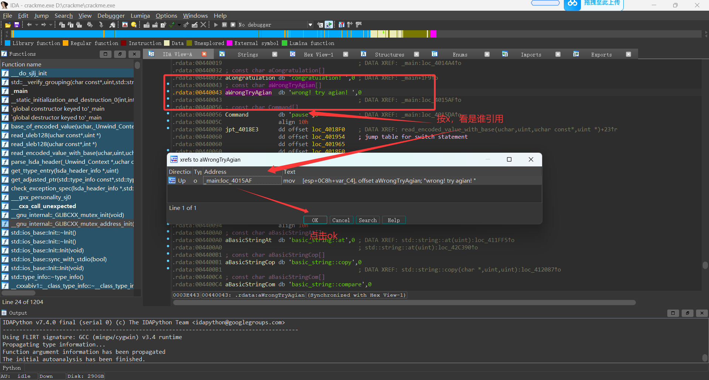
按下x键之后，可能跳转到反汇编图形视图或者是反汇编列表视图，如果跳转到图形视图可以按下空格键看列表视图
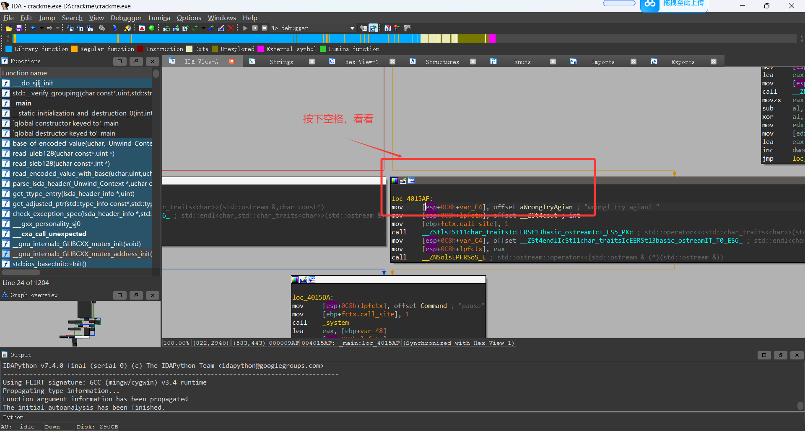
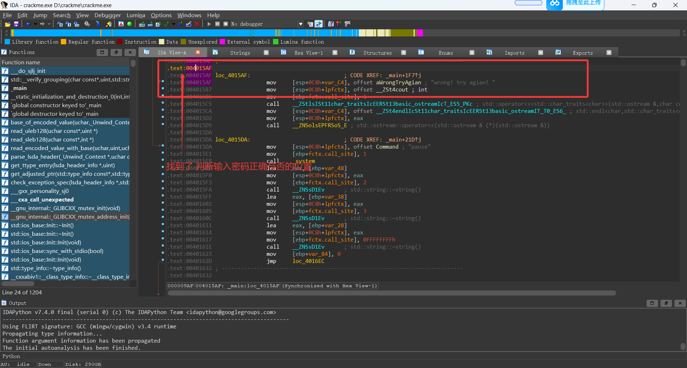
在列表视图中，可以看到这个位置
.text:004015AF loc_4015AF: ; CODE XREF: _main+1F7↑j
.text:004015AF mov [esp+0C8h+var_C4], offset aWrongTryAgian ; "wrong! try agian! "
这个地方就是输入错误密码弹出“wrong! try agian!”之处，那么我们往上找就能找到对比密码判断输入密码正确与否的地方：.text:00401587 jz short loc_4015AF，记住这个地址：00401587
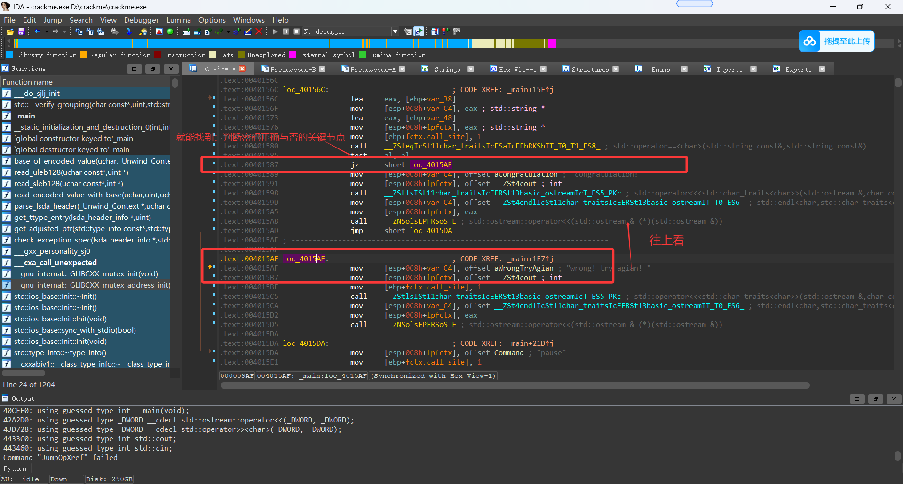
按下F5，看其伪代码
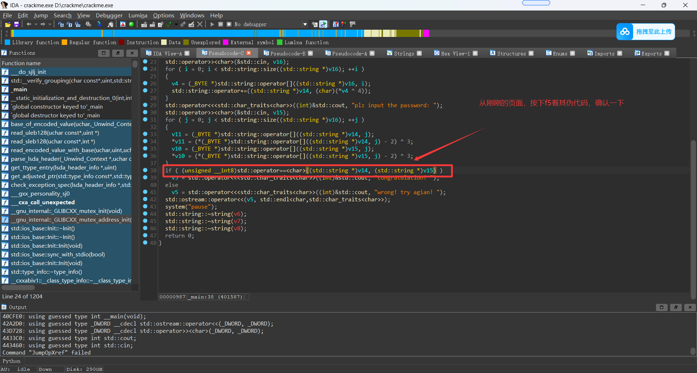
我们就可以看到,以下代码：
if ( (unsigned __int8)std::operator==<char>((std::string *)v14, (std::string *)v15) )
v5 = std::operator<<<std::char_traits<char>>((int)&std::cout, "congratulation! ");
else
v5 = std::operator<<<std::char_traits<char>>((int)&std::cout, "wrong! try agian! ");
按照我的理解，意思就算将正确密码与输入密码进行对比，如果正确就打印"congratulation! "，如果错误就打印"wrong! try agian! "。
同义，在上面反汇编视图里面00401587这个地方就是对比密码（正确就跳转到"congratulation! ",错误就跳转"wrong! try agian! "）的地方。
PS: je = 相等跳 jne = 不等跳 jz = 等于0跳 jnz = 不等于0跳
那么，.text:00401587 jz short loc_4015AF意思就是当等于0时就跳转到loc_4015AF,那我们就把jz改成jnz，那不就是无论你输入什么都不跳到"wrong! try agian! "，而是跳到"congratulation! "了吗！
三、用x64dbg进行动态调试
既然知道了可能破解的地方，我们就到x64dbg里面进行动态调试，试试看到底能不能这样干。
1、动态调试
这个crack.exe是32位的，我们就打开x32dbg，把它拖进去，按下CTRL+G,输入我们在IDA找到的那个需要改动的目标的地址，即00401587
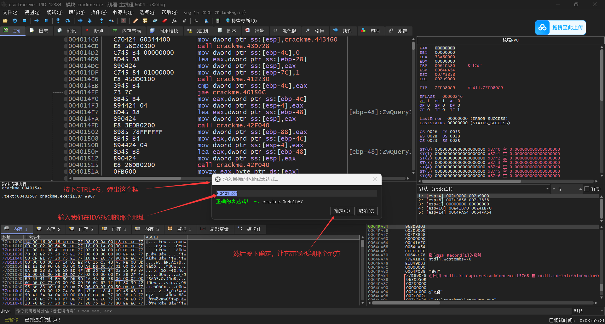
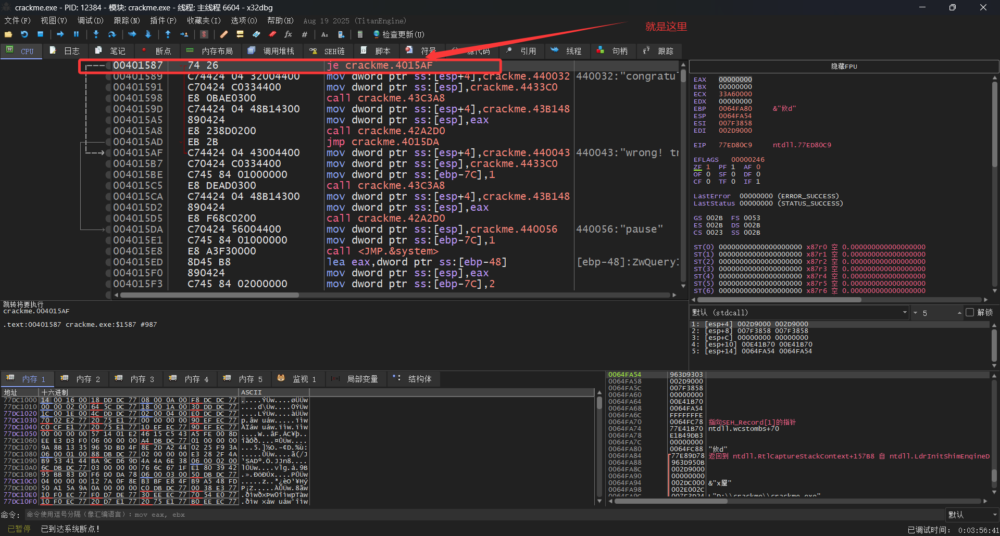
点击这一行00401587 | 74 26 | je crackme.4015AF |，按下空格键（或是鼠标右键点选汇编），将弹框中的jz 0x004015AF改为jnz 0x004015AF或是nop，点击确定
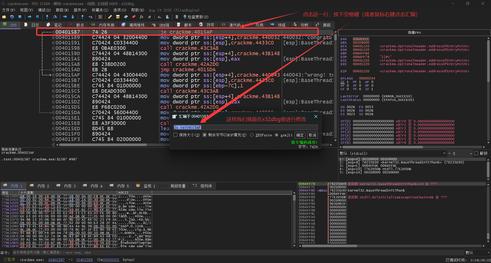
要注意的是改了之后会继续弹框，给下一个地址进行修改，这时候要点击取消
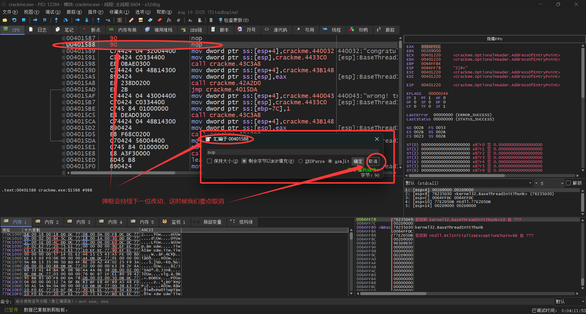
改后，点击运行(或者按F9运行)，随机输入用户名和密码，看看效果
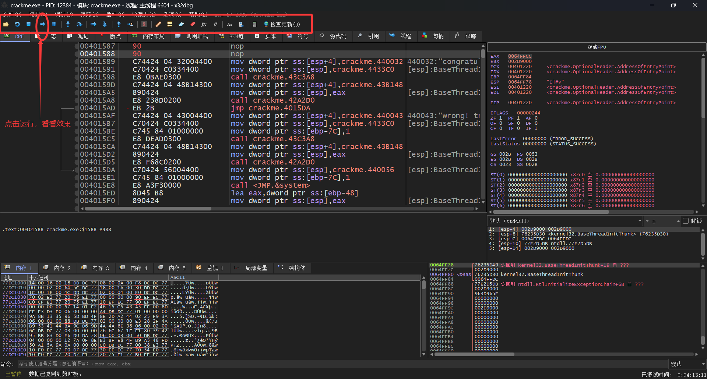
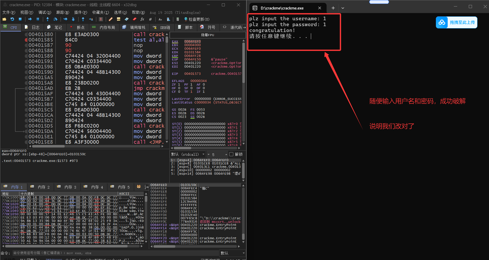
显示"congratulation! "就是成功破解了！ 但是！这只是在x32dbg里调试运行的结果，而不是真正的破解，关掉x32dbg之后再打开crack.exe，随机输入用户名和密码依旧会显示"wrong! try agian! "。那么，我们接下去就给它打个补丁，真正破解它。2、打补丁
鼠标右键，点击补丁，会弹出补丁弹框，点击修补文件，会弹出保存文件，取名为crack_patched.exe
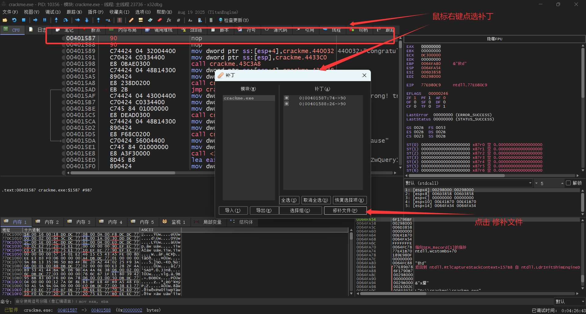
现在，你关掉x32dbg，打开crack_patched.exe，随机输入用户名和密码，都会显示"congratulation! " 就这样大功告成，零代码基础的你就成功破解了这个crack.exe，非常简单！
方法二：找到密码
打开IDA,找到伪代码这一页，复制粘贴整页代码问AI，让AI解释一下这个代码啥意思，并让AI生成一个输入用户名计算出密码的python文件。
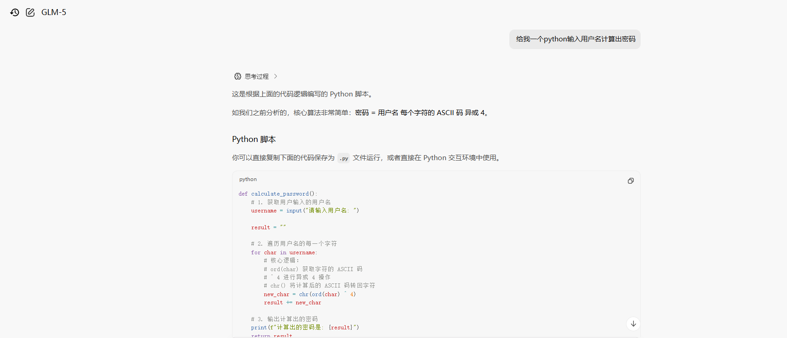
复制粘贴AI给的代码到VSCode，并保存。
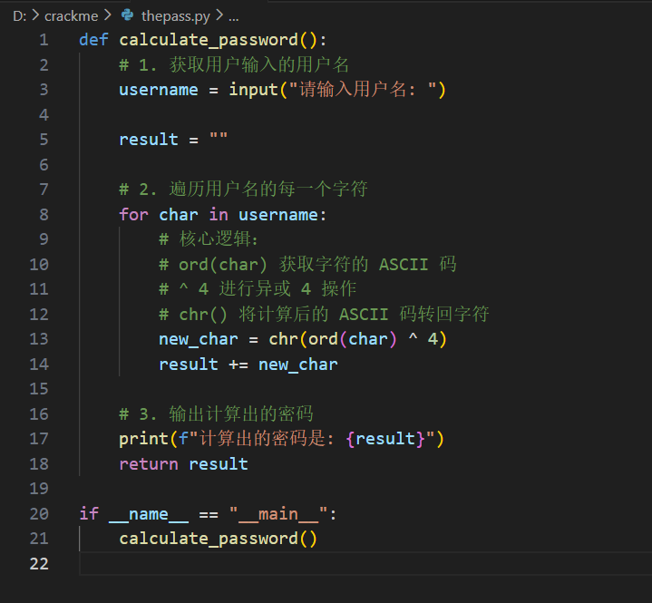
然后在该python文件夹所在的目录打开cmd，运行该python文件，就可以算出，随机用户名对应的密码，打开crack.exe试一下，是对的。
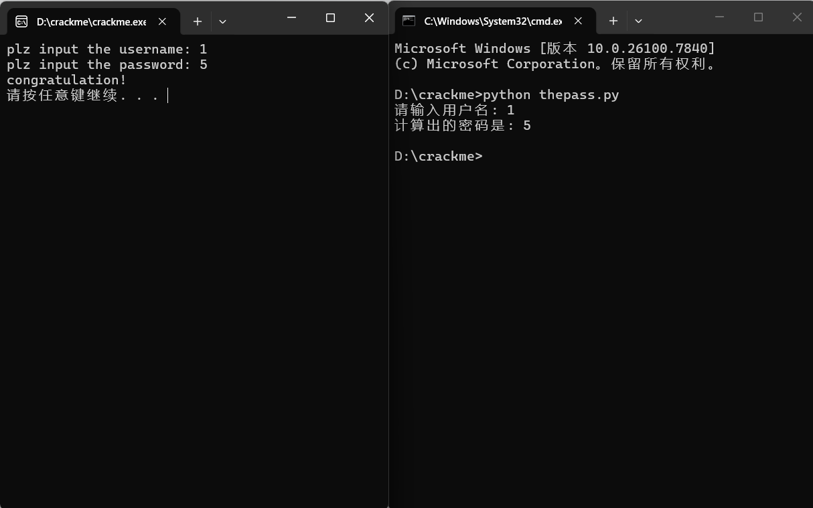
这样就找到密码了。